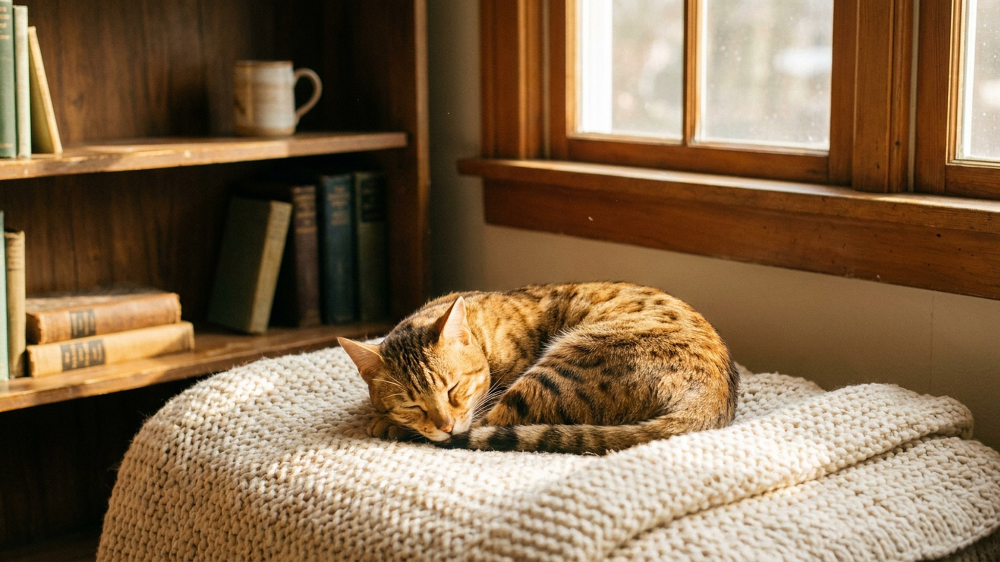

В конце 1980-х пятнистого котёнка можно было заказать по каталогу дорогого универмага — рядом со страницами, где продавали шубы. Это был расчёт: калифорнийскую сияющую вывели, чтобы человек увидел «леопарда» на диване и перестал носить его на плечах. Что стоит за этой историей, какой у породы характер и уход и почему калифорнийских сияющих сегодня почти не осталось.
🐾 Ваш питомец — калифорнийская сияющая?
Заведите профиль в AnimaLife: приложение запомнит породу, возраст и вес и будет подсказывать по уходу именно для неё. Вопросы AI-ветеринару — круглосуточно и бесплатно.
Завести профиль → Завести в MAX →
У вас iPhone? AnimaLife есть в App Store
Породу задумал в США сценарист Пол Кейси, потрясённый браконьерством ради пятнистых шкур. Идея была смелой: создать полностью домашнюю кошку с рисунком дикого хищника, чтобы люди привязались к «леопарду» дома и перестали воспринимать диких как товар.
Калифорнийскую сияющую собирали из нескольких домашних линий, без прилития крови диких кошек. В 1986 году породу представили в рождественском каталоге престижного универмага — и она мгновенно прославилась. Массовой, впрочем, так и не стала.
Внешность обманчива: за леопардовыми пятнами — ласковая, общительная и очень контактная кошка. Калифорнийская сияющая привязывается к людям, любит быть в центре событий и плохо переносит долгое одиночество.
Это атлетичная и подвижная порода: развитая мускулатура, любовь к прыжкам и высоте, охотничий азарт в игре. Ей нужны движение и внимание, иначе энергия уходит в шалости.
Калифорнийская сияющая сообразительна и хорошо ладит с детьми и другими животными, если знакомить их постепенно. Многие представители породы разговорчивы и с удовольствием «отвечают» хозяину — с такой кошкой редко бывает скучно.
Калифорнийская сияющая — одна из самых редких пород в мире. Разведение почти прекратилось ещё в 1990-х, и найти котёнка сегодня крайне сложно; настоящих представителей единицы. Под этим именем нередко предлагают похожих пятнистых кошек других пород.
Если вам важен именно леопардовый рисунок и активный характер, присмотритесь и к более доступным пятнистым породам — бенгальской, оцикету, серенгети или египетской мау. А происхождение любого котёнка стоит проверять по документам и обсуждать здоровье линии с заводчиком.
Отдельная порода — отдельные потребности: под активную кошку заранее продумайте пространство для игр, вертикаль и режим кормления. Тогда даже редкий питомец быстро впишется в дом без стресса и для него, и для вас.
🐾 У вас калифорнийская сияющая?
AnimaLife соберёт уход под породу: к каким болезням есть склонность, что проверять по возрасту, чем кормить и когда пора к врачу. Бесплатно, прямо в мессенджере.
Собрать план ухода → Собрать в MAX →
У вас iPhone? AnimaLife есть в App Store
🐾 Понравился разбор?
Подпишитесь на канал — каждый день разбираем по одному тревожному симптому у кошек и собак: что в пределах нормы, а когда пора к врачу. Подпишитесь, чтобы не пропустить разбор, который может спасти здоровье вашего питомца.
Материал носит информационный характер и не заменяет очную консультацию ветеринара.